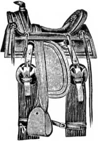

You can give your leather goods the care they need to stay supple and clean with...
Leather aficionados who want to keep their prized boots, bags, shoes, belts, chairs, harnesses, and saddles in top condition need saddle soap. Not only does it clean away dirt and grit that dull leather's luster, but it also supplies the oils and waxes essential for long-lasting suppleness and protection.
To make inexpensive saddle soap at home, you'll need two pots, one of stainless steel or heat-resistant glass... a stainless steel spoon . . . short, wide-mouthed jars or empty commercial saddle soap containers . . . beeswax . . . pure flake lye ... castile soap shavings . . . water... and pure gum turpentine. (Beeswax and pure flake lye can be found at a hardware, candle, or grocery store.)
In the steel or tempered-glass pot, combine 6-1/4 parts beeswax, 10 parts pure flake lye, and 10 parts water. Caution: Pure flake lye can burn and corrode skin, clothes, and furniture, so be careful! Boil this mixture for 5 minutes, stirring constantly with the stainless steel spoon.
Next, in the second pot, melt 2 parts castile soap shavings with 10 pans water, mixing them with the well-rinsed spoon. When the soap liquefies, add it slowly to the lye-and-beeswax mixture, blending evenly until fully combined.
Next, remove the pot from any heat and stir in 15 parts of turpentine. (Watch out: Turpentine is highly flammable.) Pour immediately into containers; cover and keep in a cool, dry place. The soap can be kept indefinitely.
If you prepare the recipe with one part equaling one tablespoon, you'll have enough to fill four 8-ounce jars.
When you use the saddle soap, have two soft flannel cloths on hand. Soak and wring out one until almost dry, dip it into the soap, and rub the leather with a firm circular motion. Rinse that cloth in warm water, wring out, and then use it to remove any excess lather. Use the second dry cloth to polish the leather to a soft luster. . . and say good-bye to ugly-looking leather goods!
|
 |
|
|